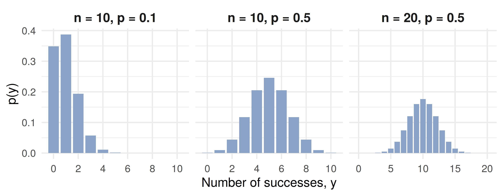
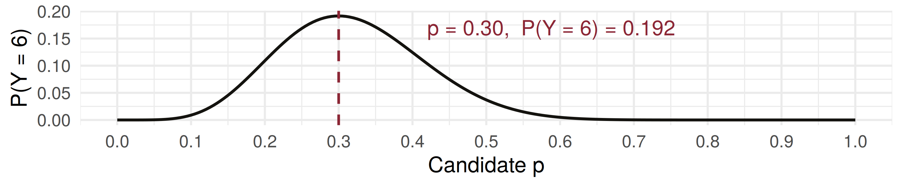

[1] 0.3585 0.3774 0.1887 0.0596 0.0133 none at_least_one three_plus total
0.3585 0.6415 0.0755 1.0000 [1] 0.0761The Binomial Probability Distribution
ADA University, School of Business
Information Communication Technologies Agency, Statistics Unit
2026-09-24
By the end of this lecture, you will be able to:
Check an experiment against the five properties of a binomial experiment (Definition 3.6)
Derive \(p(y) = \binom{n}{y} p^y q^{n-y}\) from sample points and the counting rule
Compute binomial probabilities by hand, from Table 1 and with dbinom / pbinom
Use \(E(Y) = np\) and \(V(Y) = npq\) (Theorem 3.7) to price and to judge risk
Read an unlikely count as evidence against an assumed \(p\)
Last class ended on: §3.4 — the binomial distribution.
On Wednesday every \(p(y)\) came as a table, and \(E(Y)\) and \(V(Y)\) were two sums over it. Today one formula covers a whole family of tables — indexed by just two numbers, \(n\) and \(p\).
The question this lecture answers
A Baku bank’s SME desk holds 20 loans. Each defaults this year with probability 0.05, independently of the others. How likely are three or more defaults — and how many should the desk budget for?
Definition 3.6
“Success” is only a name for one of the two outcomes. For a credit analyst, a default is the success.
A payment processor watches the next 8 card transactions at a Baku supermarket. Each is declined with probability \(0.03\), independently. \(Y\) = number declined. Binomial?
“Transactions until the first decline” breaks property 1 — that is §3.5.
An ISP has 250,000 households in Baku; 35% of them reach the advertised 100 Mbps at peak hour. We test 10 households at random. \(Y\) = number reaching 100 Mbps.
Sampling is without replacement, so strictly the trials are dependent. But removing a few households barely changes the 35%: the conditional probabilities stay very close to \(0.35\), and \(Y\) is approximately binomial with \(n = 10\), \(p = 0.35\).
If the sample were a large fraction of the population — say 10% — this fails, and the right model is the hypergeometric of §3.7.
A sample point is an \(n\)-tuple of letters, e.g. \(SSFSF\cdots FS\). Take the one with \(y\) successes first, then \(n - y\) failures: \[S\,S \cdots S\;F\,F \cdots F \quad\text{has probability}\quad (p \cdot p \cdots p)(q \cdot q \cdots q) = p^y q^{n-y}\] by independence (Theorem 2.5, applied \(n\) times): \(y\) factors of \(p\), \(n - y\) factors of \(q\).
Every other ordering of \(y\) \(S\)’s and \(n - y\) \(F\)’s has the same probability, and by Theorem 2.3 there are \(\binom{n}{y} = \frac{n!}{y!(n-y)!}\) of them.
So \(P(Y = y) = \binom{n}{y} p^y q^{n-y}\) — a count times a probability.
Definition 3.7
A random variable \(Y\) has a binomial distribution based on \(n\) trials with success probability \(p\) if and only if \[p(y) = \binom{n}{y} p^y q^{n-y}, \qquad y = 0, 1, 2, \dots, n \text{ and } 0 \le p \le 1.\]
Theorem 3.1 holds: each term is positive, and they are the terms of the binomial expansion, \[\sum_{y=0}^{n} \binom{n}{y} p^y q^{n-y} = (q + p)^n = 1^n = 1.\]
\(n = 20\) loans, default (\(S\)) probability \(p = 0.05\), so \(q = 0.95\).
No defaults: \(\;p(0) = \binom{20}{0}(0.05)^0(0.95)^{20} = 0.3585\)
At least one (the complement, as in Lecture 6): \(\;1 - p(0) = 0.6415\)
Three or more: \(\;P(Y \ge 3) = 1 - [p(0) + p(1) + p(2)]\) \[= 1 - [0.3585 + 0.3774 + 0.1887] = 1 - 0.9245 = 0.0755\] (Terms rounded; the unrounded sum is 0.92452.) With 50,000 AZN per loan, a year of 150,000 AZN or more in defaulted principal has about a 7.5% chance.
[1] 0.3585 0.3774 0.1887 0.0596 0.0133 none at_least_one three_plus total
0.3585 0.6415 0.0755 1.0000 [1] 0.0761
Small \(p\): piled up near 0 and skewed right. \(p = 0.5\): symmetric. Larger \(n\): wider and lower.
pbinom: Card DeclinesThe acquiring bank’s contract says a terminal’s decline rate is 5%. An auditor pulls \(n = 25\) transactions and finds 4 declines. How surprising is that, if the contract is right?
\[P(Y \ge 4) = 1 - P(Y \le 3) = 1 - \sum_{y=0}^{3} p(y)\] Table 1, Appendix 3: the table for \(n = 25\), column \(p = .05\), row \(a = 3\) gives \(0.966\).
In R: pbinom(3, 25, 0.05) returns the same \(0.966\).
\[P(Y \ge 4) = 1 - 0.966 = 0.034\] Either a 3-in-100 event happened, or the true decline rate is higher than 5%. As in Example 3.9, the auditor has grounds to question the reported rate.
Theorem 3.7
Let \(Y\) be a binomial random variable based on \(n\) trials and success probability \(p\). Then \[\mu = E(Y) = np \qquad\text{and}\qquad \sigma^2 = V(Y) = npq.\]
SME book: \(\mu = 20(0.05) = 1\) default a year, \(\sigma^2 = 20(0.05)(0.95) = 0.95\), \(\sigma = 0.975\).
The mean is what intuition says: 5% of 20. The variance is the new information — and \(pq\) is largest at \(p = 0.5\), where the outcome is least predictable.
Mean. The \(y = 0\) term vanishes; cancel \(y\) against \(y!\), factor out \(np\), set \(z = y - 1\): \[E(Y) = np \sum_{z=0}^{n-1} \binom{n-1}{z} p^z q^{n-1-z} = np \cdot 1\] The sum is a binomial distribution on \(n - 1\) trials, so it equals 1.
Variance. \(E(Y^2)\) does not cancel against \(y!\), but \(E[Y(Y-1)]\) does. The same device gives \(E[Y(Y-1)] = n(n-1)p^2\), so \[\sigma^2 = E[Y(Y-1)] + \mu - \mu^2 = n(n-1)p^2 + np - n^2p^2 = npq.\]
Trick 1: \(\sum p(y) = 1\) evaluates a sum for free. Trick 2: find \(E[Y(Y-1)]\), not \(E(Y^2)\).
A mobile operator’s outbound team makes \(n = 40\) calls a shift; each converts to a sale with \(p = 0.15\), independently. An agent earns 30 AZN base plus 12 AZN per sale.
Sales: \(E(Y) = 40(0.15) = 6\), \(\;V(Y) = 40(0.15)(0.85) = 5.1\), \(\;\sigma = 2.26\).
Pay \(W = 30 + 12Y\) — Wednesday’s linear rule, Theorems 3.3–3.5 and \(V(aY + b) = a^2 V(Y)\): \[E(W) = 30 + 12(6) = 102 \text{ AZN}, \qquad V(W) = 12^2(5.1) = 734.4, \qquad \sigma_W = 27.10 \text{ AZN}\]
A 10-sale shift (150 AZN): \(P(Y \ge 10) = 1 -\) pbinom(9, 40, 0.15) \(= 0.067\).
The regulator tests 20 households of a new ISP and 6 reach 100 Mbps. Which \(p\) makes that result most probable? (Example 3.10)
Maximise \(\ln P(Y = 6) = \ln\binom{20}{6} + 6\ln p + 14\ln(1-p)\): \[\frac{6}{p} - \frac{14}{1-p} = 0 \;\Rightarrow\; \hat{p} = \frac{6}{20} = 0.30\]

A microfinance lender in Ganja holds 10 independent loans of 8,000 AZN each. Each defaults with probability 0.10, and a default loses the full principal.
Four minutes, in pairs:
What is the probability that no loan defaults?
What is the probability of two or more defaults?
What are the mean and standard deviation of the AZN loss?
\(Y \sim\) binomial with \(n = 10\), \(p = 0.10\), \(q = 0.90\).
\(p(0) = (0.9)^{10} = 0.3487\)
\(p(1) = \binom{10}{1}(0.1)(0.9)^9 = 0.3874\), so \(P(Y \ge 2) = 1 - 0.3487 - 0.3874 = 0.2639\)
nTest = 20
choose = (n, k) => { let c = 1; for (let i = 1; i <= k; i++) c = c * (n - k + i) / i; return c; }
pmfB = Array.from({length: nTest + 1}, (_, y) =>
({y: y, p: choose(nTest, y) * Math.pow(p_hit, y) * Math.pow(1 - p_hit, nTest - y)}))
md`n = 20 households · mean **np = ${(nTest * p_hit).toFixed(1)}** · variance **npq = ${(nTest * p_hit * (1 - p_hit)).toFixed(2)}**`Plot.plot({
width: 1150,
height: 300,
marginTop: 40,
marginLeft: 78,
marginBottom: 58,
style: {fontSize: "18px"},
x: {label: "Households of 20 reaching 100 Mbps, y", domain: d3.range(0, 21), padding: 0.15},
y: {label: "p(y)", domain: [0, 0.4], ticks: [0, 0.1, 0.2, 0.3, 0.4], tickFormat: ".1f", grid: true},
marks: [
Plot.barY(pmfB, {x: "y", y: "p",
fill: d => d.y === Math.round(nTest * p_hit) ? "#8b2635" : "#8ba3c7"}),
Plot.ruleY([0])
]
})The red bar is the one nearest \(np\). Near \(p = 0.05\) or \(0.95\) the mass piles against an end; at \(p = 0.5\) it is symmetric and widest.
Which of these random variables has a binomial distribution?
A telecom sells to each of \(n = 50\) contacted customers with probability \(p = 0.2\), independently. What is \(V(Y)\)?
Each of 8 independent SME loans defaults with probability 0.1. \(Y\) = number of loans that repay. What is \(P(Y = 8)\)?
| Statement | |
|---|---|
| Definition 3.7 | \(p(y) = \binom{n}{y} p^y q^{n-y}, \quad y = 0, 1, \dots, n\) |
| validity | \(\sum_{y=0}^{n} p(y) = (q + p)^n = 1\) |
| at least one | \(P(Y \ge 1) = 1 - q^n\) |
| Theorem 3.7 | \(E(Y) = np, \qquad V(Y) = npq\) |
| \(p(y)\) in R | dbinom(y, n, p) |
| \(P(Y \le a)\) in R | pbinom(a, n, p) |
| estimate of \(p\) (Ex. 3.10) | \(\hat{p} = y/n\) |
A binomial experiment: fixed \(n\), two outcomes, constant \(p\), independent trials, \(Y\) counts successes
Sampling a small part of a large population is approximately binomial; a large part is not (§3.7)
\(p(y)\) is a count, \(\binom{n}{y}\), times the probability of one ordering, \(p^y q^{n-y}\)
\(E(Y) = np\) and \(V(Y) = npq\); with Wednesday’s linear rules they price a loss or a pay scheme
An improbable count under an assumed \(p\) is evidence against that \(p\)
Name the success first — then make sure \(p\) is its probability
Wackerly, 7th edition, exercises at the end of §3.4:
Week 6, Problem Set 1 is open now and closes Sunday 25 October at 23:59 on WeBWorK, covering §3.4.
Quiz I is this Saturday, 17 October, in the first 30 minutes of class, on Chapters 1–2.
Next class: Saturday 17 October — the geometric and negative binomial distributions, Wackerly §§3.5–3.6: what happens when the number of trials is the random quantity.
Dr. Samir Orujov
📧 sorujov@ada.edu.az
🏢 Building D, Room D325
🕓 Office hours: Wednesday, 16:00 – 18:00
Slides and readings: sorujov.net/teaching
Loan defaults tend to rise together in a recession. Which property of Definition 3.6 does that break, and in which direction does it push \(P(Y \ge 3)\)?
If \(Y\) is binomial\((n, p)\), what is the distribution of \(n - Y\)?
For fixed \(n\), which \(p\) makes \(V(Y)\) largest, and why is that the hardest book to reserve for?

Mathematical Statistics I - The Binomial Distribution